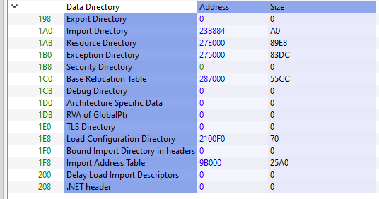

Introduction
Sections are what make up the largest part of the PE file except for all the preceding headers. Some sections have reserved names which describe their purpose. A full list can be found on Microsoft's documentation under "Special Sections".
.textstores the programme's executable code..datacontains initialised data..bssholds uninitialised data..rdatacontains read-only initialised data..edataholds export tables..idatastores import tables..relochas relocation information..rsrccontains resources used by the program such as images or icons that are embedded..tlsis thread-local storage.
Section Header Table
The section header table lies between the Optional Header and the actual sections. Inside there is one Section Header entry for each section. Section headers are defined as follows in <winnt.h>:
// Section header format.
#define IMAGE_SIZEOF_SHORT_NAME 8
typedef struct _IMAGE_SECTION_HEADER {
BYTE Name[IMAGE_SIZEOF_SHORT_NAME];
union {
DWORD PhysicalAddress;
DWORD VirtualSize;
} Misc;
DWORD VirtualAddress;
DWORD SizeOfRawData;
DWORD PointerToRawData;
DWORD PointerToRelocations;
DWORD PointerToLinenumbers;
WORD NumberOfRelocations;
WORD NumberOfLinenumbers;
DWORD Characteristics;
} IMAGE_SECTION_HEADER, *PIMAGE_SECTION_HEADER;
Name is a byte array which holds the section name. Due to its size, section names are limited to 8 characters in length, however, it is possible to circumvent this in non-executable PEs by using a string table.
Misc - PhysicalAddress or VirtualSize, is a union field, meaning that it is either one or the other of its member fields. It represents the total size of the section when loaded into memory.
For executable images, VirtualAddress holds the offset from the beginning of the image to the beginning of the section in memory. For object files it contains the address of the section before relocations are applied.
SizeOfRawData stores the size of the section on disk and may be different from VirtualSize. This field must a multiple of IMAGE_OPTIONAL_HEADER.FileAlignment. If the section size is less than this value, then the section gets padded and this field is rounded to IMAGE_OPTIONAL_HEADER.FileAlignment. However, upon loading into memory, the section no longer is required to obey the file alignment and so only its contents are loaded. Therefore, SizeOfRawData will be less than VirtualSize. It is possible for the opposite to happen as well. For example, no space will be allocated on disk for uninitialised data, however, the section will be expanded during load-time to reserve space for this data.
PointerToRawData is a pointer to the first page of the section. For executables, it must be a multiple of IMAGE_OPTIONAL_HEADER.FileAlignment.
PointerToRelocations is a pointer to the beginning of the relocations for this section. For executables, this is set to 0.
PointerToLineNumbers is pointer to the beginning of COFF line-number entries for the section. Since COFF debugging information is deprecated, this field holds 0.
NumberOfRelocations stores the number of relocation entries for this section and is set to 0 for executable images.
NumberOfLinenumbers is another deprecated field, which stores 0, and represents the number of COFF line-number entries for the section.
Characteristics is a flags field which describes things like whether the section contains executable code, initialised/uninitialised data, etc.
The section headers can be inspected with PE-Bear:

Here, Raw Addr and Virtual Addr correspond to the IMAGE_SECTION_HEADER.PointerToRawData and IMAGE_SECTION_HEADER.VirtualAddress fields, respectively. Raw Size and Virtual Size correspond to IMAGE_SECTION_HEADER.SizeOfRawData and IMAGE_SECTION_HEADER.VirtualSize. The Characteristics fields gives us information about whether the section is read-only, writable, executable, etc.
Data Directories
Data Directories represent pieces of data located within the sections of the PE file and contain information useful to the programme loader. They are simples structs defined in <winnt.h>:
typedef struct _IMAGE_DATA_DIRECTORY {
DWORD VirtualAddress;
DWORD Size;
} IMAGE_DATA_DIRECTORY, *PIMAGE_DATA_DIRECTORY;
The first member, VirtualAddress is an RVA pointing to the beginning of the Data Directory, while Size holds the number of bytes that the Data Directory occupies. While this is true of all Data Directories, each Data Directory is handled differently based on its type:
// Directory Entries
#define IMAGE_DIRECTORY_ENTRY_EXPORT 0 // Export Directory
#define IMAGE_DIRECTORY_ENTRY_IMPORT 1 // Import Directory
#define IMAGE_DIRECTORY_ENTRY_RESOURCE 2 // Resource Directory
#define IMAGE_DIRECTORY_ENTRY_EXCEPTION 3 // Exception Directory
#define IMAGE_DIRECTORY_ENTRY_SECURITY 4 // Security Directory
#define IMAGE_DIRECTORY_ENTRY_BASERELOC 5 // Base Relocation Table
#define IMAGE_DIRECTORY_ENTRY_DEBUG 6 // Debug Directory
// IMAGE_DIRECTORY_ENTRY_COPYRIGHT 7 // (X86 usage)
#define IMAGE_DIRECTORY_ENTRY_ARCHITECTURE 7 // Architecture Specific Data
#define IMAGE_DIRECTORY_ENTRY_GLOBALPTR 8 // RVA of GP
#define IMAGE_DIRECTORY_ENTRY_TLS 9 // TLS Directory
#define IMAGE_DIRECTORY_ENTRY_LOAD_CONFIG 10 // Load Configuration Directory
#define IMAGE_DIRECTORY_ENTRY_BOUND_IMPORT 11 // Bound Import Directory in headers
#define IMAGE_DIRECTORY_ENTRY_IAT 12 // Import Address Table
#define IMAGE_DIRECTORY_ENTRY_DELAY_IMPORT 13 // Delay Load Import Descriptors
#define IMAGE_DIRECTORY_ENTRY_COM_DESCRIPTOR 14 // COM Runtime descriptor
The above are values represent the indices for the Optional Header's DataDirectory array at which each type of Data Directory is located.
If both the VirtualAddress and Size fields are set to 0, then this particular Data Directory is unused.
Data Directories can be inspected under the Optional Header with PE-Bear:
